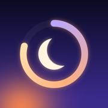

Dusk
A calm, complete intermittent fasting tracker for iPhone and Apple Watch. Every feature is free. No account, no ads, no subscription.
Support
Questions, bugs or ideas: pedrumshokouhi@gmail.com. I read everything.
Works with your devices
Dusk connects through Apple Health. Apple Watch, Fitbit, Garmin, Oura, WHOOP, Withings and Strava can all write to Apple Health from their own iPhone apps, and Dusk shows that data on your home screen. Google Fit and Health Connect are Android services, so they only reach Dusk through a bridge app that writes to Apple Health.
Not medical advice
Dusk is a tracking tool, not a medical device. Fasting zones are general estimates. Fasting is not right for everyone. Talk to a doctor first if you are pregnant, under 18, have diabetes or a history of disordered eating, or take medication. Stop if you feel unwell.